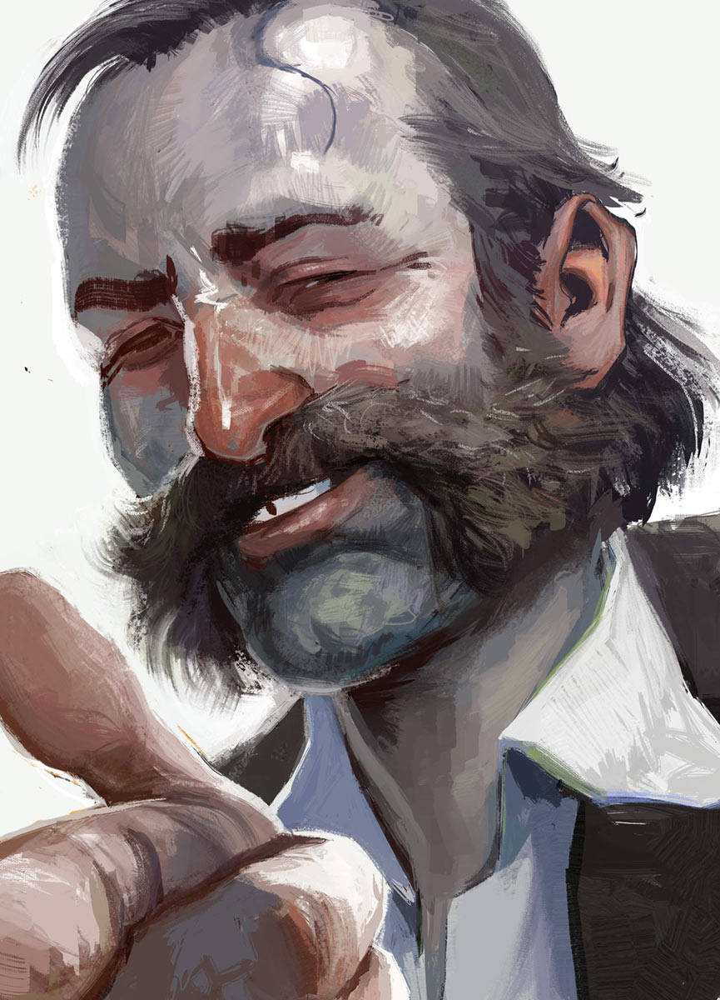
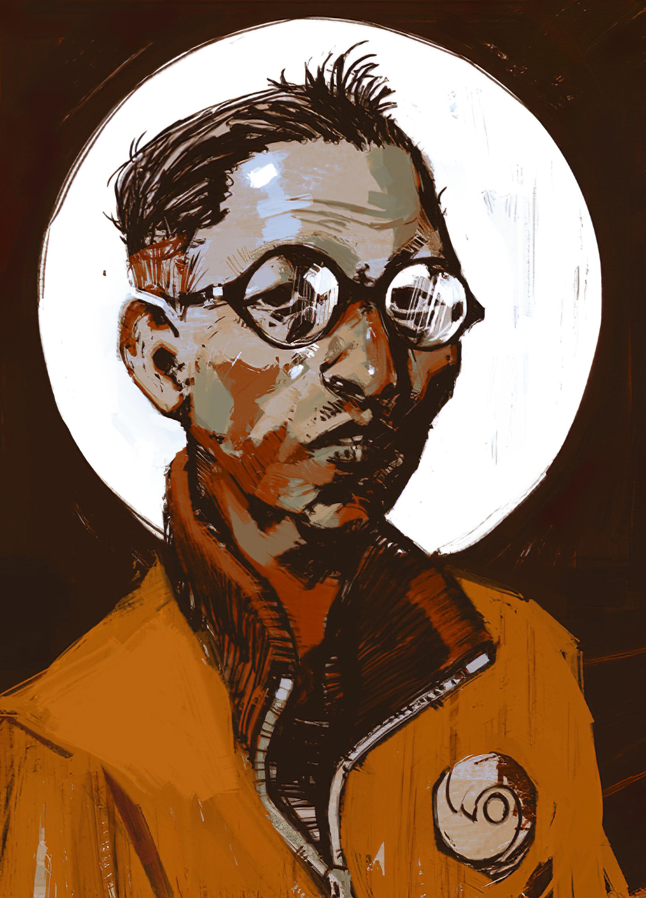
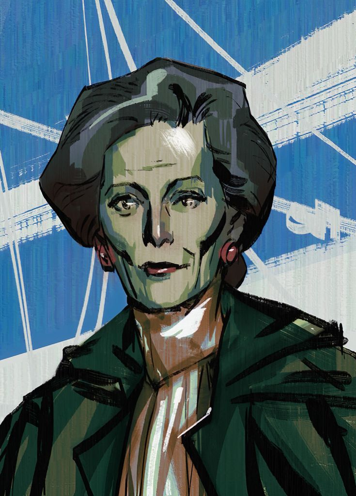
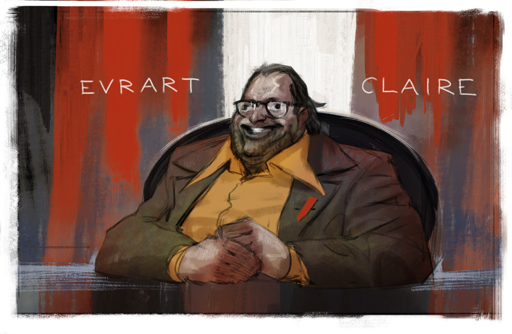
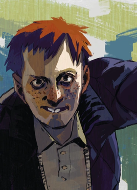

Harrier "Harry" Du Bois

Harry is a detective trying to make sense of a difficult case and his own uncertain past. He is unpredictable, introspective, and shaped by the choices you make.
Meet some of Revachol's residents
These spoiler-light introductions share the roles and personalities of some people you will encounter in Disco Elysium without revealing major story events.

Harry is a detective trying to make sense of a difficult case and his own uncertain past. He is unpredictable, introspective, and shaped by the choices you make.

Kim is a practical, observant lieutenant assigned to work alongside Harry. He values careful investigation and approaches unusual situations with steady professionalism.

Joyce is a composed representative for a shipping company. She is thoughtful and well-spoken, and offers a perspective on the tensions surrounding the local harbor.

Evrart leads the local dockworkers' union. He is confident and persuasive, and takes a strong interest in the people and events connected to the harbor.

Klaasje is a guest staying at the Whirling-in-Rags hotel. She is sociable and perceptive, and has her own view of the people and atmosphere around her.

Cuno is a brash, energetic kid from the neighborhood. He speaks his mind and can be hard to impress, but is one of the locals Harry and Kim encounter during their work.